⚠️ Important:
Avant tout, si le nom du document n'est pas README.html alors il est conseillé de lire le README.html car celui-ci permet d'afficher les couleurs dans le rapport d'analyse contrairement au README.md.
Introduction


sources: R, ESIEE Paris
{kind=link}
Dans le cadre du module "R & Data Visualization" (DSIA-4101C), nous avons eu l'opportunité de créer un dashboard liant les compétences acquises grâce ce module avec notre créativité. Le projet se réalisa en binôme et l'objectif fut de fournir une représentation intéractive (dashboard) d'un jeu de données accessibles publiquement et non modifiées.
Notre responsable:
- COURIVAUD Daniel
Notre binôme est composé de:
- RAFIDINARIVO Itokiana
- FONTA Romain
Et nos jeux de données sont:
- Obesity among adults by country, 1975-2016
source: Kaggle
- Employment by activities (ISIC Rev.4)
source: OECD Stats
Problématique
Alors notre binôme s'est demandé: Existe t'il un lien entre l'obesité et les emplois bureautiques et/ou manuels?
Table des matières
I. Guide utilisateur
1. Installation & Téléchargement
A. Langage R
Dans un premier temps, afin d'utiliser notre projet il faudra posséder R version 4.0.2 de préférence sur votre appareil. Pour cela, que votre appareil soit sous Linux, macOS, Windows ou autre, rendez vous la page de téléchargement de Python en cliquant ici. Puis suivez les instructions lors de l'installation.
B. RStudio
Dans un second temps, installer R ne suffit pas. Le projet est plus accessible à l'utilisation si RStudio est installé sur votre appareil. Voici le lien pour le télécharger ici.
C. Le dashboard
Télécharger le projet
Le projet est téléchargeable sur le la page suivante ici. Celui-ci pourra être utilisé comme un "Git Repository", en "forkant" le projet, ou comme un projet dossier normal, en "clonant" le projet sur votre ordinateur.
2. Installation des packages nécessaires et exécution
Pour que le projet marche comme il faut, des packages supplémentaires sont nécessaires. Le nom de ces packages est disponible dans le fichier packages.csv:
... "rnaturalearth" "sp" "leaflet" "DT" "tidyverse" ...
Ceux-ci seront utilisés dans le début du script global.R. Afin d'installer ces packages et exécuter le projet il faudra suivre ce protocole:
1) Ouvrir le projet avec RStudio
Pour ouvrir le projet avec RStudio, il faut aller dans le menu puis faire une des propositions suivantes:
- cliquer sur File/New Project/Existing Directory puis indiquer le chemin vers le projet
- cliquer sur File/Open Project puis indiquer le chemin vers le projet
Normalement après vous aurez ceci:
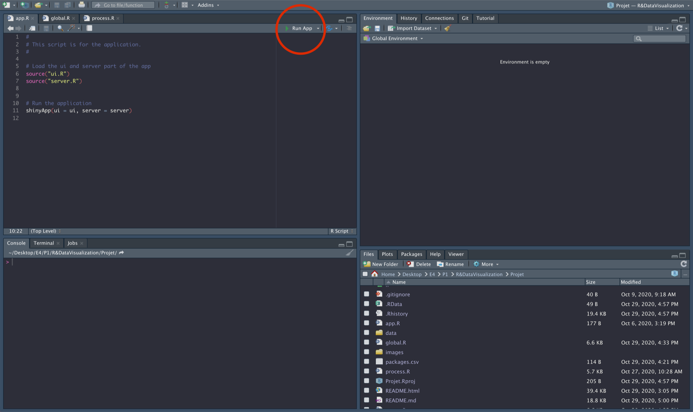
2) Appuyer sur RunApp
3. Utilisation
Une fois éxécuté, le "dashboard" apparaît sous la forme d'un navigateur web généré par RStudio.
A. Bar de navigation
Pour d'accéder aux différentes pages proposées par l'application il y a la bar de navigation (ci-dessus). L'application propose 3 pages:
- Obesity
- Employment
- Analytics
Tous sont accessibles en cliquant sur le label correspondant à la page de la bar de navigation.
B. Page Obesity
C. Page Employment
D. Page Analytics
II. Guide développeur
1. Les répertoires & fichiers
A. README.md
Ce fichier Markdown, que vous êtes actuellement en train de lire normalement, contient:
- Présentation du projet
- Guide utilisateur
- Guide développeur
- Rapport d'analyse
2. Le code
III. Rapport d'analyse
1. Les données
A partir d'ici on suppose que les données on déjà été traitées, pour plus de détails ici.
A. Obesity among adults by country, 1975-2016
Ce jeu de données provient de Kaggle, une communauté regroupant des outils et des ressources pour la data science, précisément celui-ci a été modifié par l'utilisateur Aman Arora à partir des données originales se trouvant ici sur le site l'Organisation Mondiale de la Santé (OMS).
Dans ce jeu de données on retrouve le pourcentage de personnes obèses, pour les hommes/femmes/les deux, au sein d'un pays pour une année spécifique. Celui-ci est composé de 24 570 enregistrements/lignes et de 8 variables.
Voici la structure du jeu de données post-traitement:
| Variables | Type | Description |
|---|---|---|
| country | Categoriel (nominal) | Le pays |
| country_code | Categoriel (nominal) | Le code du pays en format ISO3 |
| continent | Categoriel (nominal) | Le continent, associé au country |
| year | Numérique (ratio) | L'année |
| sex | Categoriel binaire (nominal) | Le sexe, on ne prend en compte que l'homme ou la femme |
| obesity | Numérique (ratio) | L'obesité moyenne en pourcentage pour un pays et un sexe donné |
| max_obesity | Numérique (ratio) | La valeure minimale en pourcentage de l'obesité |
| min_obesity | Numérique (ratio) | La valeure maximale en pourcentage de l'obesité |
Remarques :
- On ne travaille pas avec les variables max_obesity et min_obesity, ceux-ci ont été gardées au cas où elles deviendraient utiles à autrui ultérieurement.
- La variable country_code sert pour le graphique géolocalisé, on utilise un jeu de données complémentaire afin d'obtenir les coordonnées géographiques de chaque pays.
B. Employment by activities (ISIC Rev.4)
Ce jeu de données provient de OECD (Organisation for Economic Co-operation and Development), une organisation économique intergouvernementale composée de 37 pays fondée en 1961 (Wikipedia) dans le but de stimuler la progression économique et les échanges.
Dans ce jeu de données on retrouve le nombre d'employés selon des activités économiques. Ces activités économiques sont définies par l'International Standard Industrial Classification (ISIC) Revision 4, on y retrouve les activités suivantes:
- Agriculture, forestry and fishing
- Mining and quarrying
- Manufacturing
- Electricity, gas, steam and air conditioning supply
- Water supply; sewerage, waste management and remediation activities
- Construction
- Wholesale and retail trade; repair of motor vehicles and motorcycles
- Transportation and storage
- Accommodation and food service activities
- Information and communication
- Financial and insurance activities
- Real estate activities
- Professional, scientific and technical activities
- Administrative and support service activities
- Public administration and defence; compulsory social security
- Education
- Human health and social work activities
- Arts, entertainment and recreation
- Other service activities
- Activities of households as employers; undifferentiated goods- and services-producing activities of households for own use
- Activities of extraterritorial organizations and bodies
Voici la structure du jeu de données post-traitement:
| Variables | Type | Description |
|---|---|---|
| country | Categoriel (nominal) | Le pays |
| country_code | Categoriel (nominal) | Le code du pays en format ISO3 |
| continent | Categoriel (nominal) | Le continent, associé au pays |
| sex | Categoriel binaire (nominal) | Le sexe, on ne prend en compte que l'homme ou la femme |
| year | Numérique (ratio) | L'année |
| subject | Categoriel (nominal) | L'activité économique (listées au-dessus) |
| activity | Categoriel binaire (nominal) | Le type d'emploi, soit bureautique, soit manuel |
| value | Numérique (ratio) | Le nombre d'employés dans le secteur, associé à un secteur/année/pays |
Remarques :
- La création de la variable activity a été faite manuellement à partir de la variable subject donc celle-ci reste subjective à notre binôme.
2. Observations
Maintenant analysons les jeux de données sur l'obésité et l'emploi afin de répondre à notre problématique.
A. Obesity among adults by country, 197=5-2016
-
Cartographie & Distribution
| 1975 | 1996 | 2016 |
|---|---|---|
| 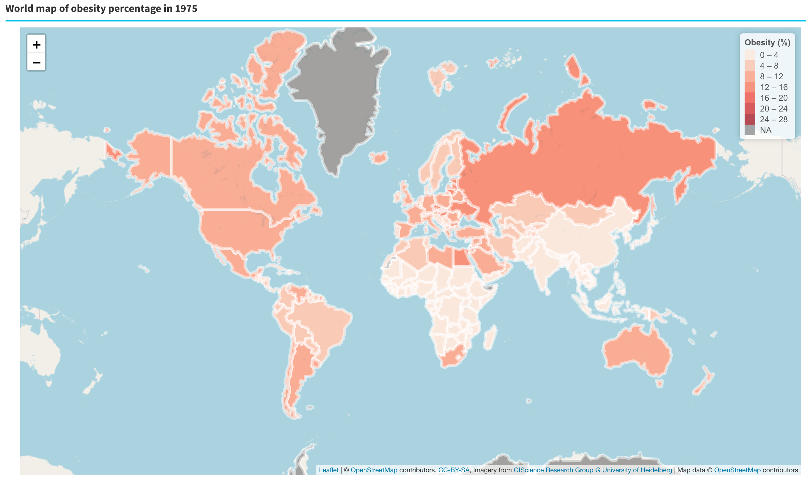 | 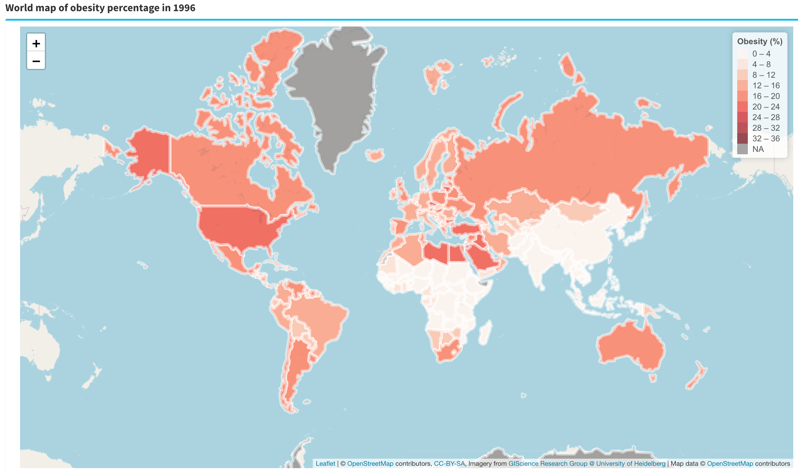 | 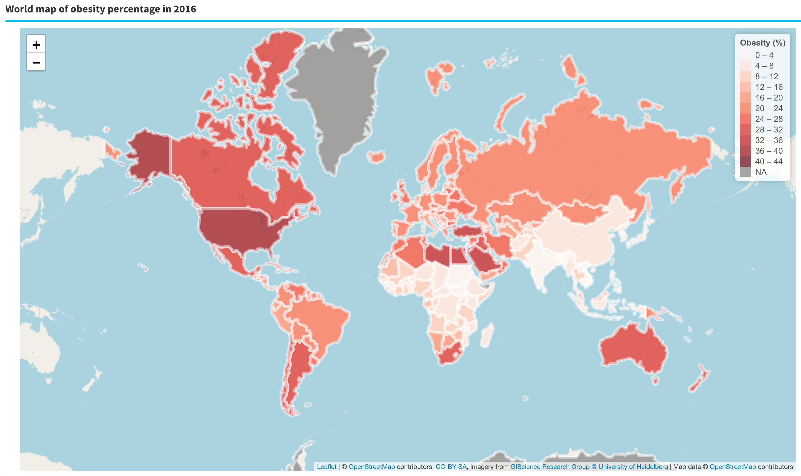 |
| 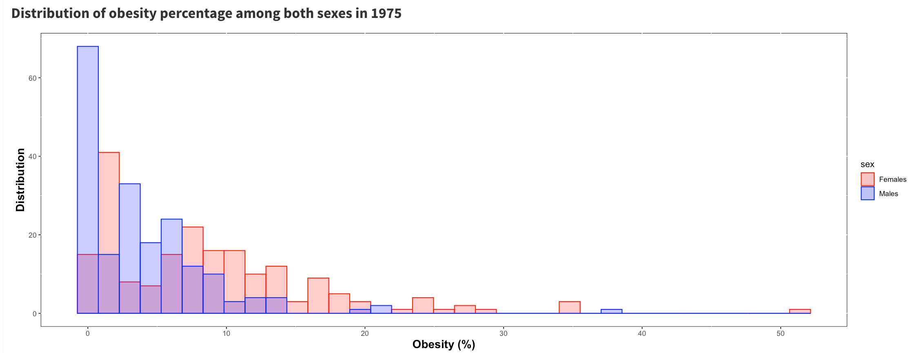 | 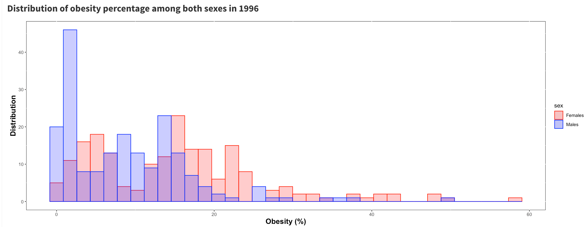 | 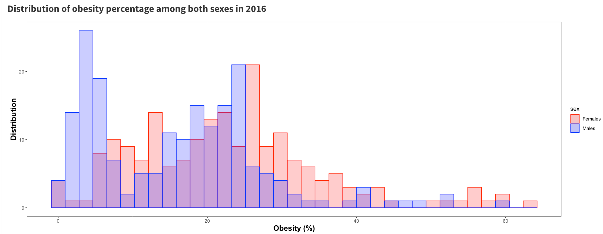 |
-
On observe plusieurs choses avec ces cartes et histogrammes:
- Les pays les moins développés sont ceux qui possèdent une croissance faible même quasi nulle du pourcentage d'obesité.
- Les pays les plus développées/riches et les pays en voie de développement possèdent une croissance un peu plus élevée du pourcentage d'obésité.
- Un pays a réussi à avoir une majorité de sa population en obésité (Nauru).
-
Analyse spacio-temporelle
Selon les continents:
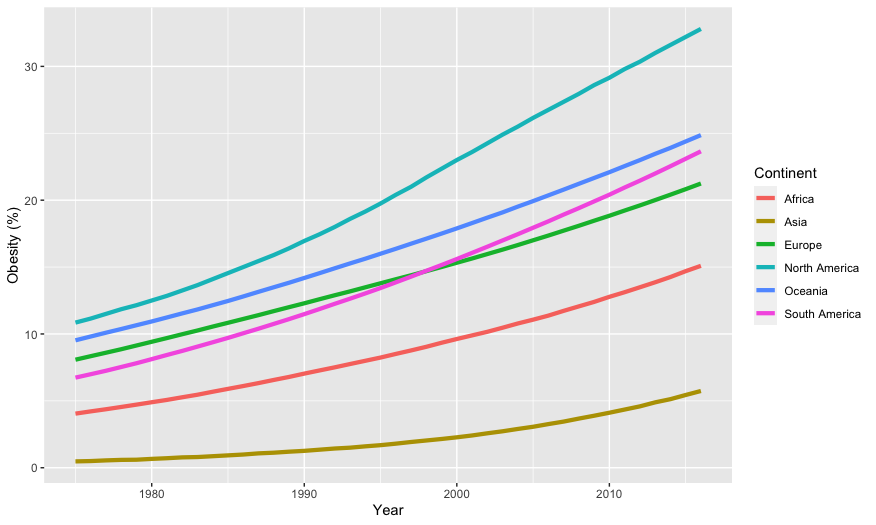
-
On observe plusieurs choses avec ce graphique:
- Dans chaque continent le pourcentage d'obesité au sein de la population ne fait que augmenter.
- Le continent avec me pourcentage d'obésité le plus élevé est l'Amérique du nord.
- Le continent avec le pourcentage d'obésité le plus faible est l'Asie.
-
Critiques:
- Le calcul du pourcentage d'obésité par continent s'est fait par le calcul des moyennes d'obésité de chaque pays du continent sans prendre en compte le coefficient de population par pays, donc les résultats ne sont pas à 100% représentatifs de la réalité.
Selon les continents et le sexe:
| Continent | Graphique |
|---|---|
| Asie | 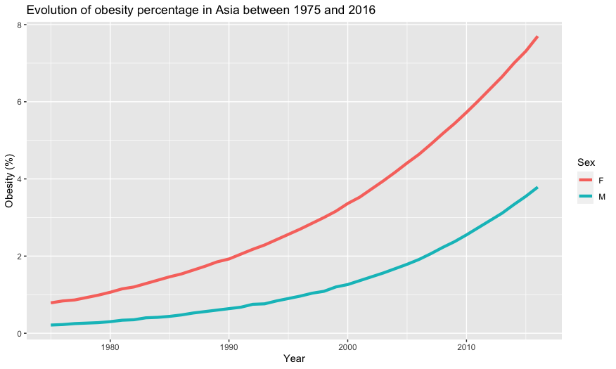 |
| Europe | 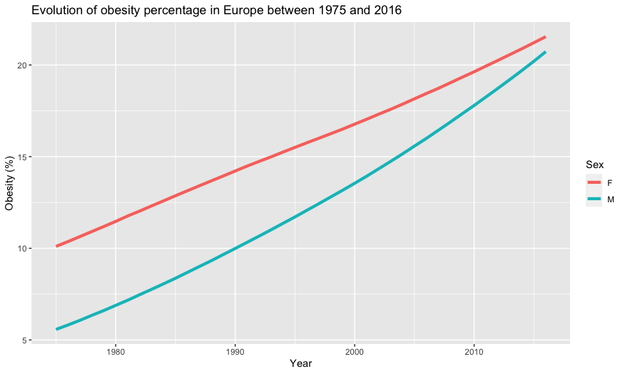 |
| Amerique du nord | 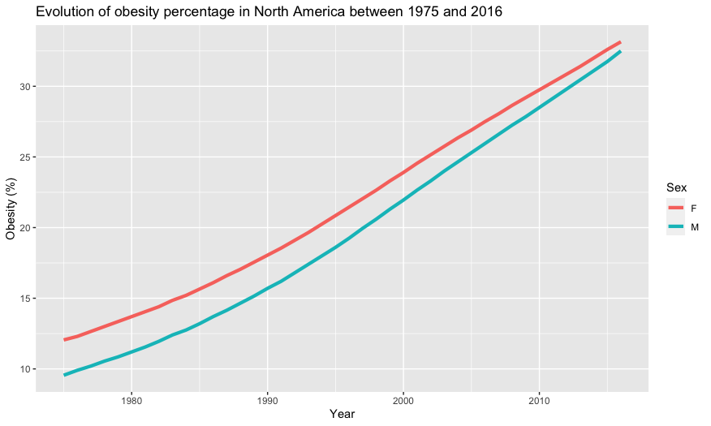 |
| Amerique du sud |  |
| Océanie | 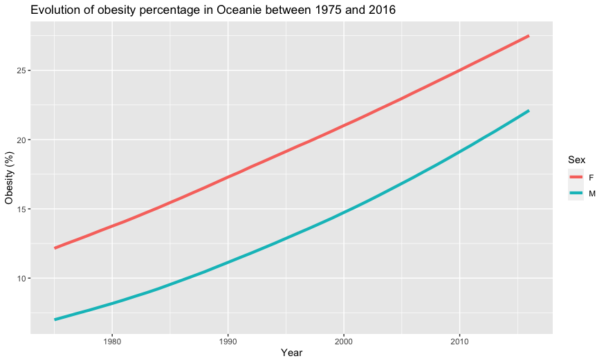 |
-
On observe plusieurs choses avec ce graphique:
- Dans tout les continents, peut importe le sexe, la tendance pour le pourcentage de l'obésité est d'augmenter.
- Dans la majorité des continents le pourcentage de femmes obèses est toujours plus élevé que les hommes.
- L'Europe et l'Amérique du nord sont les continents qui auront tendance à inverser la position des courbes des hommes et des femmes. Donc il est très probable qu'à partir d'une certaine année le pourcentage d'hommes obèses deviendra plus élevé que celui des femmes obèses.
-
Critiques:
- On retouve ici le même problème que le graphique précédent puisqu'on n'utilise pas le coefficient de la population pour le calcul de la moyenne d'obésité.
-
Bilan
A partir de toutes ces observations on peut conclure que l'obésité est une maladie qui touche le monde entier cependant certains sont plus touchés que d'autres, notamment les pays riches et les plus développés à quelques exceptions près. En plus de cela, les femmes sont plus touchées que les hommes par cette maladie en général cependant on observe une future transition de cette tendance en Europe et en Amérique du nord. Malheureusement l'obésité peut être décrite comme une fonction croissante par rapport au temps, c'est-à-dire que le pourcentage de personnes obèses ne fait qu'augmenter.
B. Employment by activities (ISIC Rev.4)
-
Analyse spacio-temporelle
Selon le type d'activité:
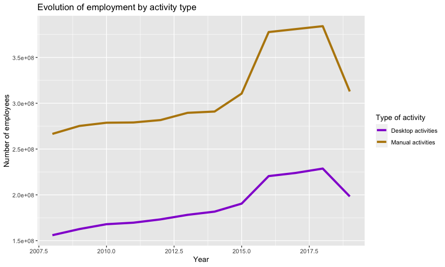
- On observe plusieurs choses avec ce graphique:
- Le nombre d'employés dans les deux types d'activité augmente jusque 2018 puis en 2019 on a une petite chute (peut-être dû à la crise de la COVID-19).
- Il y a plus d'employés dans les activités manuelles que dans les activités bureautiques.
Selon le type d'activité pour un échantillon de pays:
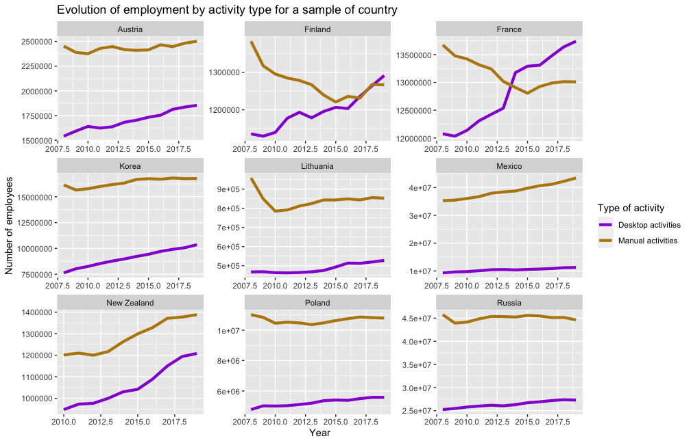
- On observe plusieurs choses avec ce graphique:
- La majorité des pays possède plus d'employés dans le manuel que dans le bureautique.
- Certains pays ont subi une transition où le nombre d'employés en bureautique est plus élévé que dans le manuel. On remarque aussi le fait que le bureautique augmente et le manuel diminue ou se stabilise après cette transition.
Répartion des activités manuelles:
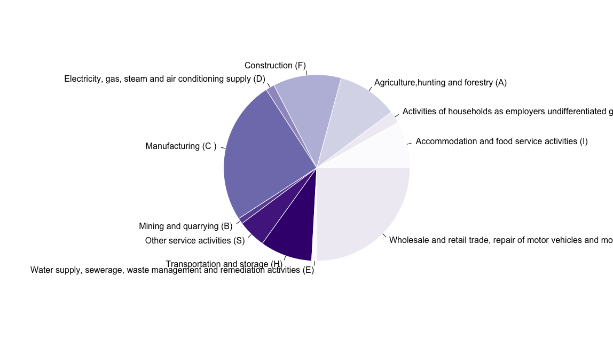
- On observe plusieurs choses avec ce graphique:
- Le commerce de gros et de détail, la réparation de véhicules automobiles et de motos représente environ un quart (25%) des activités manuelles.
- La production représente aussi environ un quart (25%) des activités manuelles.
Répartion des activités bureautiques:
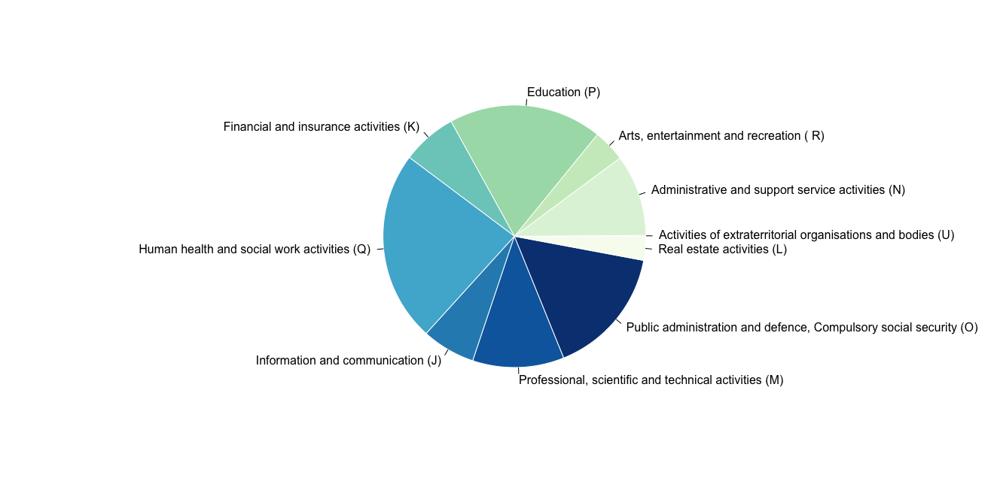
-
On observe plusieurs choses avec ce graphique:
- Les activités sociales et médicales représente environ un quart (25%) des activités bureautiques.
- L'éducation représente environ un cinquième (20%) des activités bureautiques.
- L'administration et la défense publique représente environ 16% des activités bureautiques.
-
Bilan
A partir de toutes ces observations on peut conclure qu'entre 2008 et 2018, l'emploi possédait une bonne dynamique car le nombre d'employés ne faisait qu'augmenter dans cet interval. Cependant à partir de 2019 il y a un arrêt de cette dynamique que l'on suppose être la crise sanitaire de la COVID-19. Puis les métiers bureautiques commencent peu à peu à devancer les métiers manuels dans certains pays européens.
C. Comparaison des jeux de données
Nos deux jeux de données nous ont appris beaucoup de choses, cependant il serait intéressant de conclure sur notre problématique en faisant des opérations entre elles.
-
Contraintes
Malgré le fait que nos jeux de données soient chacunes assez complètes, elles ne proviennent pas de la même sources. Donc la fusion des jeux de données limites les comparaisons sur 15 164 enregistrement/lignes dont 32 pays répartis sur les années [2008;2016].
-
Correlation
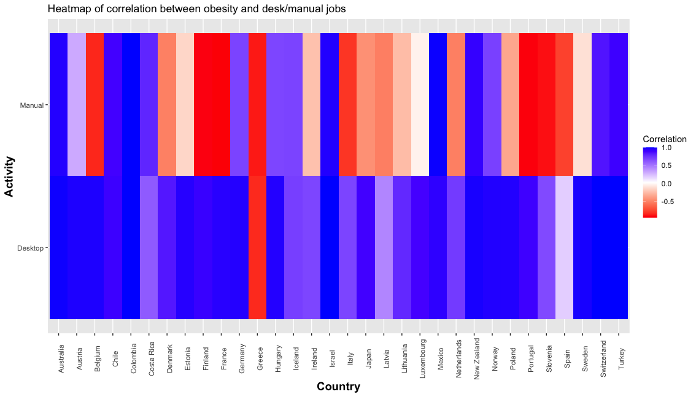
- Explication du graphique:
- En abscisse, les pays
- En ordonnée, le type d'activité (Desk: Bureautique, Manual: Manuel)
- Les carrés représentent la correlation entre l'obésité et le nombre d'employés dans le type d'activité. La couleur des carrés est interprété de la manière suivante:
- Plus la couleur du carré se rapproche du bleu 🔵, donc de la valeur 1, alors correlation est positive. Cela signifie que l'obésité et le type d'activité peuvent être représentés par une fonction croissante.
- Plus la couleur du carré se rapproche du rouge 🔴, donc de la valeur -1, alors correlation est positive. Cela signifie que l'obésité et le type d'activités peuvent être représenté par une fonction décroissante.
- Par exemple pour la France:
- 🔵 Desk/Obesity en bleu implique que le pourcentage d'obesité augmente lorsque le nombre d'employés dans les bureaux augmente.
- 🔴 Manual/Obesity en rouge implique que le pourcentage d'obesité baisse lorsque le nombre d'employés travaillant manuellement augmente.
- Observations:
- Desk🔵 Manual 🔴: 14 pays (Denmark, Finland, France, Hungary, Ireland, Italy, Japan, Latvia, Lithuania, Netherlands, Poland, Portugal, Slovenia, Sweden)
- Desk🔵 Manual 🔵: 16 pays (Australia, Austria, Belgium, Chile, Colombia, Costa Rica, Estonia, Germany, Iceland, Israel, Luxembourg, Mexico, New Zealand, Norway, Switzerland, Turkey)
- Desk🔴 Manual 🔴: 2 pays (Greece, Spain)
- Hypothèses:
- Pour les pays en Desk🔵 Manual 🔴 sont les pays qui ont tendance à moins recruter dans les métiers manuels mais plus dans les métiers bureautiques.
- Pour les pays en Desk🔵 Manual 🔵 sont les pays qui recrutent dans les métiers manuels et bureautiques.
- Pour les pays en Desk🔴 Manual 🔴 sont les pays qui sont possiblement en crise.
- Bilan
En combinant nos jeux de données, on a découvert 3 groupes de pays qui présentent des comportements similaires grâce à la correlation entre l'obésité et l'emploi dans les activités manuelles/bureautiques.
3. Conclusion
En conclusion on peut dire qu'il existe un lien entre l'obésité et la croissance des emplois en bureaux. Cependant ce lien n'est pas présent pour tous les pays car cela dépendant aussi de leur situation économique, politique et/ou démographique.